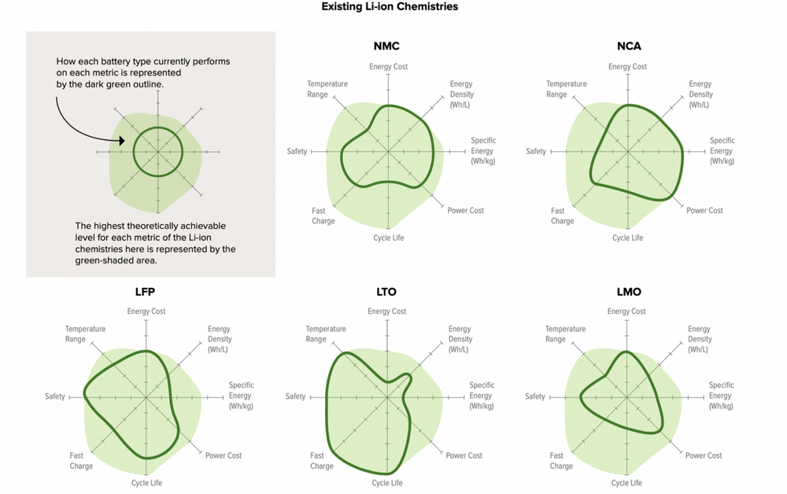
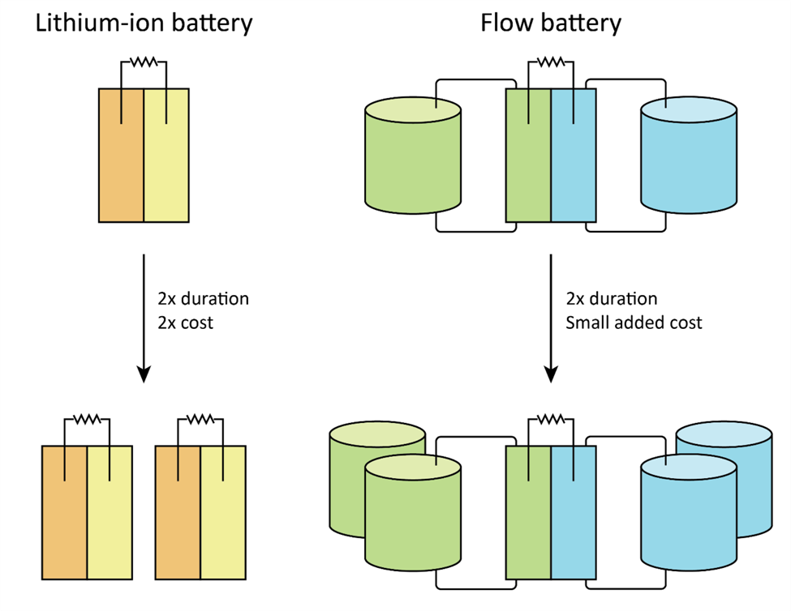
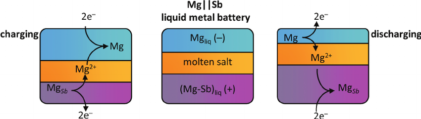
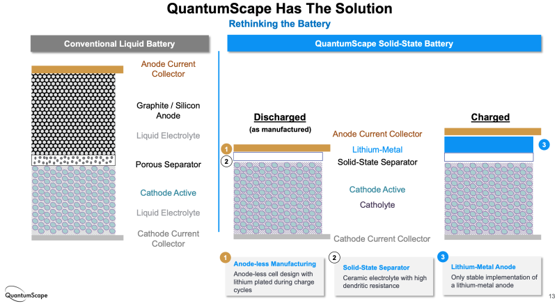

7 Batteries
The battery market has seen dozens of chemistries come and go, but four have stuck and scaled to achieve mass-market penetration: lead acid, nickel-cadmium (Ni-Cd), nickel-metal hydride (NiMH) and lithium-ion (Li-ion).
Most of the developing world still uses lead-acid batteries, a $45 billion global market. But lithium-ion batteries have been gaining ground rapidly in wealthy markets.
LIBs have hit on a combination of anode, cathode and electrolyte that performs well enough along several criteria (especially cost) to work for most short-duration applications today. They have become cheap, and manufacturing capacity has converged around them.
7.1 Lithium
7.1.1 Portugal’s Lithium Reserves
According to the European commission, Europe will need 60 times more lithium by 2050 (target year for carbon neutrality) for electric cars and energy storage alone, which is fueling an international race to extract lithium from the different sources where such deposits can be found, such as hard rocks, salt brines and geothermal water.
But for the people of Covas do Barroso, this scramble for raw materials and the prospect of an open-air mine translate into fears of deforestation, air pollution, water contamination, noise and an end to their way of life.
Interviews conducted by Euronews with a dozen residents, revealed that the vast majority of them were against mining lithium from the mountain rocks near their village, while a few were indifferent. No one was in favour.
“I think it won’t bring anything good,” said Paulo Pires, a local shepherd. “It will consume a lot of water, which we need for the sheep and for their fields. Instead of hearing birds, I will hear explosions, machines…there will be a lot of pollution.”
“I’m not against lithium. But I’m not in favour of polluting my village and other villages like mine in order to depollute cities” Pires added.
A study by the Portuguese University of Minho, conducted for Savannah Resources, found that Portugal’s 60,000 tons of known lithium reserves (0,4% of world’s reserves) are “insufficient to meet the demand for lithium derivatives for the production of batteries in Europe.” However, the report also adds that these reserves “are very relevant in reducing Europe’s dependence on other regions of the globe and increasing the security of Europe’s supply chain.”
7.2 Lithium-ion Batteries (LIBs)
Roberts
The global market for EV batteries alone is expected to hit almost $1 trillion by 2030. The more energy-dense, cheap and safe LIBs can get, the faster the electrification of transportation will happen. LIBs are being used both for distributed, building-level energy storage and for large, grid-scale storage installations.
The global storage market is expected to grow at an average of 31 percent a year over the coming decade, reaching 741 gigawatt-hours of cumulative capacity by 2030. The vast bulk of the demand for batteries is going to come from transportation
In 2019, the three chemists behind the initial development of lithium-ion technology won the Nobel Prize in chemistry. LIBs boast incredibly high energy density and specific energy, which is to say, they cram lots of oomph into a small, lightweight package, and they are capable of cycling many more times than their predecessors.
Lithium-ion battery pack prices, which were above $1,100 per kilowatt-hour in 2010, have fallen 89% in real terms to $137/kWh in 2020. By 2023, average prices will be close to $100/kWh. With foreseeable improvements in LIB chemistry, prices could hit $40 or even $30/kWh in coming decades. LIBs are going to hit limits, even if it’s just the base price of raw materials, before they become economical for long-duration grid storage. They are being installed for 4- to 6-hour storage applications, sometimes 8 hours, and someday may even aspire to 12 hours. But beyond that — for the weekly or even seasonal storage a renewables-based grid will need — some other technology or technologies will have to step in.
Before Tesla was founded, Li-ion batteries were almost exclusively used in consumer electronics — mainly laptops and cell phones. At the time of the launch of the Tesla Roadster in 2008, the total global Li-ion manufacturing capacity was approximately 20 GWh per year. By 2030, we expect over 2,000 GWh of annual production capacity based on already announced plans by cell manufacturers. That would be 100× growth in 22 years.
LIBs do face restraining pressures, especially materials and safety concerns.
LIBs have been around in commercial form since the early 1990s, though obviously they’ve improved quite a bit since then.
Today’s most common and popular LIBs use graphite (carbon) as the anode, a lithium compound as the cathode and some organic goo as an electrolyte. They boast two key advantages over prior battery chemistries.
First, they need very little electrolyte. They are what’s known as “intercalation” batteries, which means the same lithium ions nestled (intercalated) in the structure of the anode transfer to be intercalated in the cathode during discharge. The electrolyte only has to serve as a conduit; it doesn’t have to store many ions. Consequently, the cell doesn’t need much of it. Saving on electrolyte saves space and weight. (Bonus: The process is almost perfectly reversible, which gives LIBs their high cycle life.)
Second, LIBs squeeze lots of energy into a small space. Lithium is the lightest metal (at the upper left corner of the periodic table) and extremely energy-dense, so LIB cells can work with electrodes only 0.1 millimeters thick. (Compare lead-acid electrodes, which are several millimeters thick.) This also makes LIBs smaller and lighter.
Even the biggest grid battery is just stacks upon stacks of cells, like Lego bricks. LIBs are extremely modular — they can be scaled precisely to need.
The most common LIB chemistries used today are lithium nickel manganese cobalt oxide (NMC) and lithium nickel cobalt aluminum (NCA), which use compounds of those metals as the cathode. Lithium and nickel turn out to be a knockout combo: light and energy-dense.
Some batteries, particularly those with cobalt, are prone to “thermal runaway,” which means that if one cell goes haywire and heats up, it heats up the next one, and so on and so on in a self-reinforcing process that results in fires
List of LIB chemistries:
Lithium nickel manganese cobalt oxide (NMC cathode)
Lithium nickel cobalt aluminum (NCA cathode)
Lithium ferro phosphate or lithium iron phosphate (LFP cathode)
Lithium manganese oxide (LMO cathode) and lithium manganese nickel oxide (LMNO cathode)
Lithium sulfur (Li-S, sulfur cathode)
Lithium metal (anode) and solid state
Lithium titanate (LTO anode)
Lithium air (Li-air, lithium anode)
Cobalt, used in standard NMC and NCA chemistries, is highly toxic, comes almost entirely from the Democratic Republic of the Congo, and is mined in terrible working conditions that frequently spur charges of human rights abuses. Nickel and lithium are less nasty in and of themselves, but they may run into supply constraints as the market grows. (Nickel, in particular, is a source of current stress.)
Smart manufacturers such as Tesla and others are diversifying their battery lines in anticipation of supply issues, trying to evolve away from cobalt and attempting to secure a steady supply of lithium and nickel.
Sionic
Sionic is betting that its approach will prove to be easier and cheaper to adopt for the companies that have already sunk massive investment into their factories.
Instead of re-engineering silicon to tamp down on its propensity to expand and contract during cycling, Sionic uses low-cost micron silicon and designs around that property.
“If you fight physics, physics always wins,” said Sionic CTO Surya Moganty. “We are controlling, or engineering, that expansion of silicon so it does not cause problems.”
Sionic also leans on its corporate pedigree to design an electrolyte that’s optimized for safe performance with the new anode. That’s important, because changing one key component of a battery typically affects how the other pieces perform.
Lition-ion Varieties
There are a few clear leaders — lithium nickel manganese cobalt oxide (NMC), lithium nickel cobalt aluminum (NCA), and lithium ferro phosphate (LFP).
Most EV makers use NMC batteries; Tesla uses NCA. In the past, it’s been difficult to push down the amount of cobalt in these batteries (it plays an important balancing role), but manufacturer LG recently introduced an NMC 811 battery: 80 percent nickel, 10 percent manganese, 10 percent cobalt. GM will use them in its new line, including in the Hummer, and Tesla will put them in some of its Model 3s in China.
Most big battery manufacturers, including Panasonic (which supplies many of Tesla’s batteries), have vowed to gradually reduce and eventually eliminate cobalt.
Nickel is the key to energy density. Tesla, VW, and others are working on special high-nickel battery varieties that will be used for specialty vehicles that require extra-high energy density, like larger SUVs and trucks.
But not every vehicle needs that, and nickel supply constraints are looming, so work is also being done to further boost manganese — a much more stable, abundant material — and reduce cobalt.
Silicon Anodes
Many LIB developers are experimenting with silicon as an anode coating, partially or completely replacing graphite.
Silicon holds on to nine times more lithium ions than graphite, so energy density improves (range expands by 20 percent), and a silicon battery can charge and discharge much more quickly than graphite batteries, so power density improves as well. But silicon expands when it absorbs ions, so it breaks down quickly; cycle life is still much lower than graphite.
Automotive cells with NCA or NCM cathodes paired with Si-dominant anodes will increase energy density by up to 50%, thereby dropping the $/kWh cost by 30-40% in less than a decade.
Silicon-as-anode doesn’t operate via intercalation. Instead of nestling into the anode, ions react with the silicon and bond with it, a process called “conversion.” That makes it more difficult to peel the ions off without damage, but it can hold way more ions.
Fluorides Cathodes
Metal fluoride-based cathodes (like iron fluoride or copper fluoride) and sulfur-based cathodes — which also operate via conversion rather than intercalation and can also store more ions.
It’s plausible that with a conversion cathode and an engineered low-swell silicon anode, the cycle life of Li-ion can be extended all the way to 10,000 full cycles while also having the highest energy density.
Only that combination — a conversion-based anode and a conversion-based cathode — that can bring LIB prices down to “~$50/kWh by 2030 and ~$30/kWh by 2040.
Lithium ferro phosphate (LFP)
LFP use a lithium-iron compound as cathode.
A few years ago, it looked like LFPs were going to be displaced by NMCs and NCAs, but lately they’ve made a comeback and now have a decent case that they could take the lead in the EV and stationary storage markets. They have already captured almost half of the Chinese EV market.
LFPs use lithium ferrophosphate (LiFePO4) as the cathode, replacing nickel, manganese, and/or aluminum. The advantages relative to nickel-based competitors:
cheaper on a materials basis (though not yet on \$/kWh);
higher cycle life (Matt Roberts, previously executive director of the Energy Storage Association, now working at battery company Simpliphi, says his company’s LFP batteries are warrantied for 10,000 cycles, compared to 2,500 to 5,000 for cobalt batteries.);
higher power density;
high safety and low toxicity (“They're almost literally bulletproof, in that they can't catch fire,” says Schick.);
replaces problematic and/or rare metals with iron, which is safe and abundant.In exchange for these advantages, LFPs offer lower energy density (there are fewer spaces for ions to intercalate). However, because they are so safe, LFPs do not require the same protective packaging as NMCs and NCAs, so they can gain some of that efficiency back at the pack level. Tesla says that, while LFPs have 50 percent of the energy density of their high-nickel competitors, an LFP-based vehicle can still get 75 percent of the range.
Current LFPs are not going to feature in high-performance vehicles, but most vehicles aren’t that. They are “good enough, essentially, for any kind of commuter car,” Schick says. “I think you’re going to see a whole bunch of economy cars that are LFP.” LFP will be used in taxis, ride-share vehicles, and fleet vehicles, along with scooters and rickshaws and motorcycles. It will be the cheap, reliable, everyday option.
LFP in energy storage markets
Energy density is also less important in the energy-storage market, where price, capacity, and safety rule.
LFP’s high cycle life and low costs make them attractive in the grid-storage market
As for distributed, behind-the-meter storage, in some markets like California and New York City, Tesla home batteries (still NMC) are not allowed inside garages, thanks to the risk of thermal runaway, which can lead to fires. LFPs have passed an extensive regimen of safety tests and will be available everywhere; that gives them a tangible market advantage.
With sufficient manufacturing scale, the price of any battery approaches the price of its materials, and LFP uses incredibly cheap materials.
Of all the lithium-ion chemistries, LFP may play the largest role in accelerating the world’s transition to sustainable energy.
Lithium manganese oxide (LMO) and lithium manganese nickel oxide (LMNO)
Manganese is abundant, safe, and stable at a wide variety of temperatures, though its energy density is lower than cobalt or nickel. Because LMOs don’t contain cobalt and avoid the threat of thermal runaway, they are used in medical equipment, as well as power tools, electric bikes, and EVs.
Lithium sulfur (Li-S)
Li-S burst on the scene to some excitement in the late ‘00s, demonstrating that a cell with lithium as the anode and sulfur as the cathode — two elements with extremely low atomic weight — could double the specific energy of conventional LIBs. Plus sulfur is incredibly cheap.
One problem is that sulfur has very low conductivity, so something (usually carbon) has to be added to pull in the ions. More importantly, Li-S batteries degrade quite quickly and have low cycle life. To date, they remain commercially unavailable.
Lithium metal anodes
Solid lithium metal makes for a great anode, in that it is highly prone to releasing electrons and ions. The problem is that lithium is highly reactive and ions tend to form “dendrites,” or tree-like formations, that reduce energy density and cycle life and increase the chances of a short or fire. It was problems with lithium’s reactivity that originally led to the addition of graphite to the anode, so the ions could intercalate rather than plating.
Solid Electrolytes (solid-state)
The liquid electrolytes used in most LIBs limit the kinds of electrodes that can be used and the shape of the battery cell; plus, they are often flammable, a safety hazard.
“While there are technical reasons why this technology appears to be the holy grail of batteries,” writes SILA Nanotechnologies, “the reality is that even if the technology works (and that is a big ‘if’ after 40 years of development) it is unlikely to find more than niche opportunities in the market.”
Lithium titanium oxide (LTO)
LTO batteries have lithium-titanate nanocrystals coating the anode, which increases surface area and allows for many more electrons to be released much faster than graphite. Consequently, they have incredibly high power density (they can release energy quickly) and can recharge faster than any other LIB. They also have high cycle life and high recharging efficiency.
They are lower voltage than conventional LIBs and thus have lower energy density, but because of this they are also extremely safe to operate.
Amazing performance - Crazy price.
Lithium-air (Li-air)
Li-air, which uses lithium metal as the anode, a variety of materials as the electrolyte (that’s where research is most intensive), and as the cathode … air.
Li-air has incredibly high specific energy (energy per unit of weight), theoretically as high as the specific energy of gasoline. In practice, only a fraction of that potential has been demonstrated, but even that fraction is about five times the specific energy of conventional LIBs.
All sorts of improvements in electrolytes, cycle life, and scalability will be needed before Li-air will become practical, but in terms of 2030 dark horses, this is one to watch.
7.3 Flow Batteries
Flow batteries circulate a liquid electrolyte through stacks of electrochemical cells and have long held the promise of 10-hour durations, tens of thousands of cycles, minimal degradation and no limitations on depth of discharge. This performance promise has lured venture capital investment and research and development — but so far, the investments have yielded few commercial, competitive flow battery products.
Volts
Flow batteries operate on a fundamentally different principle than the batteries we’ve looked at so far. Rather than storing energy in metals on the electrodes, energy is stored as a dissolved metal in an aqueous electrolyte.
The anolyte is stored in one tank; the catholyte is stored in another; pumps circulate the fluids past electrodes (sometimes in a fuel cell), where they don’t quite mix, thanks to a thin separator, but they exchange ions and electrons, generating electricity.
The key conceptual difference is that flow batteries separate energy (the amount stored) from power (the rate at which it can be released). If you want more power, you make the electrodes bigger. If you want to store more energy, you make the tanks of electrolytes bigger. And electrolytes are fairly cheap, so it’s cheap to increase capacity.
This is in contrast to LIBs, which double in cost with each doubling of energy capacity.

In theory, flow batteries can scale up to almost any size, relatively cheaply. So as the demands for storage get bigger — six hours, eight hours, 12 hours — the economics of flow batteries look better and better relative to LIBs.
A variety of different metals can be used in the electrolyte. For a long while, vanadium was expected to be the breakout candidate, but materials costs remain stubbornly high. Companies have tried with zinc (like the late ViZn, and also see below) and iron (like ESS, which is still going strong). Recent history is littered with failed flow battery companies.
Flow batteries have been the next big thing for a really long time. The problem, as ever, is the steady march of LIBs down the cost curve. For a three-or four-hour system, a lithium ion battery outperforms any flow battery now. Flow batteries can theoretically expand their energy capacity indefinitely, for little more than the cost of the electrolyte goop to fill the tanks (though pumps and other accoutrement add to the cost a bit). When we’re below $100 per kilowatt-hour on the cost of [LIBs] we are really close to the cost of the goop.
Flow batteries aren’t going to be able to catch up to LIBs, at least not any time soon.
7.4 Zinc
Batteries that exchange zinc ions instead of lithium ions — it’s the second-most-popular metal for batteries.
Zinc has the particular advantage of being light and energy dense like lithium, so with relatively modest adjustments, it can slipstream into the lithium-ion manufacturing process.
Zinc is plentiful, cheaper than lithium, largely benign, and makes batteries that are easier to recycle. Like other lithium alternatives, zinc sacrifices energy density, but makes some of it back up in savings on safety systems at the battery-pack level, thanks to the lack of any need for fire suppression. This puts it in the same markets as LFP: smaller commuter/city vehicles, robo-taxies, scooters, e-bikes — and energy storage.
Some in the zinc crew have larger designs: “We think we can coexist with lithium-ion and replace lead acid,” says Michael Burz, president and CEO of EnZinc, which has developed a new zinc anode it says can come close to LIBs on energy density. Remember, lead-acid batteries are still ubiquitous. “Forklifts use them. Airplanes. Snowmobiles.“ says Burz. “Data centers have huge banks of lead-acid batteries they use for switchover power.” It’s still a $45 billion global market.
EnZinc thinks it can hit a sweet spot: close to the energy density of LIBs, close to the low cost of lead-acid, safer than either, and good enough to substitute for a big chunk of both.
Zinc anodes are “cathode agnostic,” so Burz envisions, rather than becoming a battery manufacturer, becoming an anode supplier — “Zinc Inside,” modeled on “Intel Inside” processors. Research is underway on a number of cathodes, from manganese and nickel to, just as with lithium, air. A zinc-air battery “has a system-level specific energy of anywhere between 250 to 350 watt-hours per kilogram,” says Burz, well above most LIBs. The trick is making it controllable and rechargeable.
Most of these batteries make the same basic claims: they are less energy dense than LIBs, but they are safer (no fires), they are made with benign and plentiful materials (no supply problems), and they are cheaper at high capacities/durations. It’s just that last part that’s tricky, since the price and capabilities of LIBs are a moving target.
7.5 Sodium-ion
Lithium, nickel, and cobalt all have their issues. You know what material doesn’t? Salt.
Sodium compounds can be substituted for lithium compounds to create sodium-ion batteries (NIBs), which have been the source of considerable hype for at least five years now. The basic idea and manufacturing process is the same for NIBs as LIBs — “you could use existing gigafactory structures to produce a sodium-ion battery,” says Steingart — but unlike the latter, the former can’t use graphite for the anode, because it can’t capture enough of the relatively bigger sodium ions, so something called “hard carbon” is typically used instead.
Research is underway to find more energy-dense sodium compounds for the cathode and cheaper materials for the anode. “Sodium-ion has a lower energy density than lithium-ion,” says Tim Gretjak, an innovation analyst with Con Edison, “so all the materials that go into it have to be correspondingly that much cheaper.”
7.6 Liquid-Metal

The battery will pass no current at room temperature, but on site, the contents of the boxes are super-heated (to 500°C), which activates the materials; the metals alloy and de-alloy, with the cathode being entirely consumed and then reformed, as the batteries charge and discharge.
Because the contents are liquids, the battery has no “memory” — it is not affected or degraded by absorbing or releasing ions. This means it suffers virtually no loss of capacity over its lifetime; in fact, it works better if completely charged and discharged every few days.
From the time they are first activated, liquid metal batteries require no outside heating or cooling for the lifetime of the system, eliminating a ton of system costs, and they can operate in a wide range of temperatures and conditions.
The batteries contain materials less than half the cost of LIB materials, can be manufactured for less than half the cost of LIBs, and will run for 20 years at a “fraction of the cost” of LIBs.
7.7 QuantumScape
Wesoff
QuantumScape claims to have solved the solid-state battery riddle that has stumped generations of battery scientists. It has created a commercially viable, rechargeable lithium metal battery with enough oomph to make it a contender to displace the internal combustion engine.
With potential energy density exceeding 400 watt-hours per kilogram, solid-state battery deployment could mark the tipping point for adoption of electric vehicles and open up massive transportation markets. QuantumScape’s battery employs lithium metal anodes (referred to by the company as “solid state”), which could be the key to the next wave of EV battery performance gains, according to the findings from BMW shown in the chart below.

Among its many innovations, QuantumScape has replaced the polymer separator used in conventional lithium-ion batteries with a ceramic separator, enabling the use of an anode of metallic lithium instead of one made of carbon or carbon-silicon. The metallic lithium anode is formed in situ when the finished cell is charged.
A viable lithium-metal anode would allow higher energy density than is possible with conventional anodes and therefore longer driving range with the potential of faster charging, long cycle life and improved safety – qualities that are fundamental to changing the minds of those reluctant to purchase an EV.
“I believe that retail investors and perhaps even the technical staff at Volkswagen have been severely underestimating the scale of the challenges facing QuantumScape. Manufacturing defect-free ceramic separators at meters-per-second speed is very unlike other manufacturing challenges faced by the battery or PV industry previously. This is insanely hard. Elon Musk always pounds his chest about”production hell" and how difficult making cars is. Making these ceramic separators will be at least 10× harder than any technical challenge Tesla [has] faced."
A business parallel with solar that the storage industry might want to avoid is how the photovoltaic market coalesced around a narrow set of Chinese-made silicon technologies after a U.S. venture capital frenzy that set the solar investment clock back a decade. Manufacturability, cost reduction and actual industrial policy won the solar market for China, rather than exotic science.
QuantumScape is still a development-stage startup facing enormous technology and scaling risk as it attempts to move from lab to production.

Quantumscape Scam?
SPAC’s are free to promote absurd financial projections and timelines that are illegal in a typical IPO. The current SPAC mania is partly fueled by insiders exploiting this loophole to lure retail investors, setting them up as bagholders for the pump and dump, when the lockup expires and they cash in. We think QS is a textbook case.
Scorpion (2021) QuantumScape SPAC Scam (pdf)
Massive investments in lithium-ion (Li-ion) battery manufacturing capacity, which is expected to more than triple to 1.3 TWh by 2023.
Li-ion batteries’ scaling pathway is unlike that for silicon photovoltaic cells; investment continues to differentiate among chemistries with performance attributes that are best suited to specific use cases.
Solid-state technology is poised to massively disrupt the storage industry by unlocking new opportunities for cheap, safe, and high-performing batteries.
Meeting electricity goals for <2C° global temperature increase may require deploying batteries much faster than Li-ion price decreases are predicted to enable (unless demand flexibility can be increased).
High renewable penetration modeling scenarios generally assume that 3%–7% of the total installed renewable capacity is required as additional interday energy storage to account for forecast and demand uncertainty.
If 60% of the 6,500 GW of current global electricity generation capacity were met with variable renewable energy, it would require between 120 and 280 GW of long duration storage, or enough capacity to power France plus Germany.